Full examples using PyMAPDL#
这些示例演示了使用 PyMAPDL 模块的完整示例。
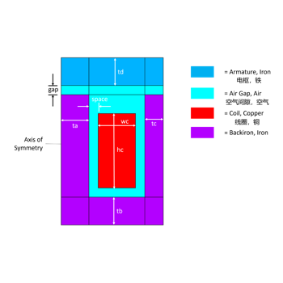
2D 静磁螺线管分析
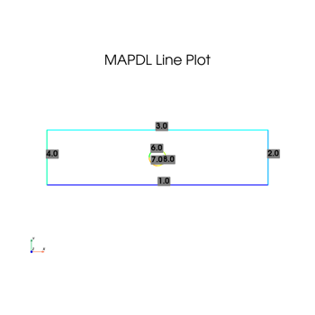
MAPDL 2D 平面应力集中分析

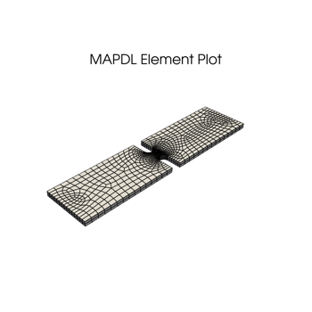
缺口板的 3D 应力集中分析
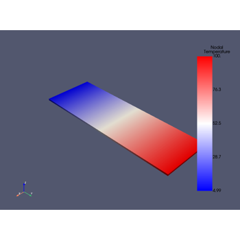
pyMAPDL 基本热力学分析
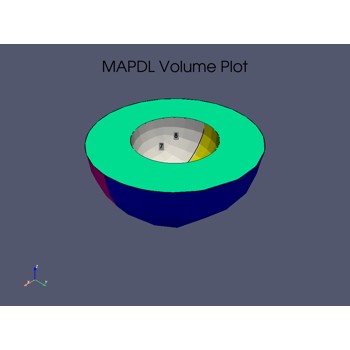
3D 声学分析
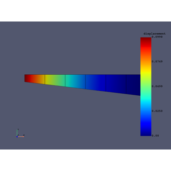
使用 PyMAPDL 的 DPF-Core 基本用法
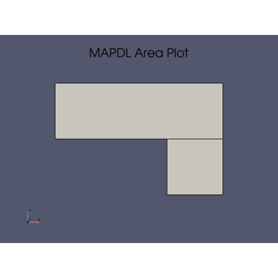
角钢支架的静态分析
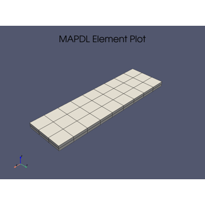
基于黏结单元(或称内聚单元)的双悬臂梁试验静力模拟
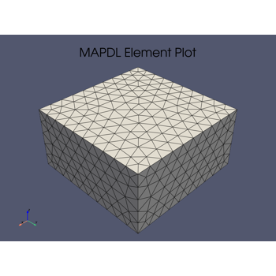
接触单元示例
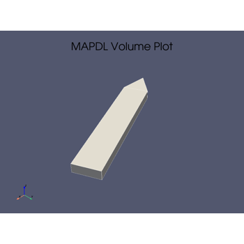
循环对称分析

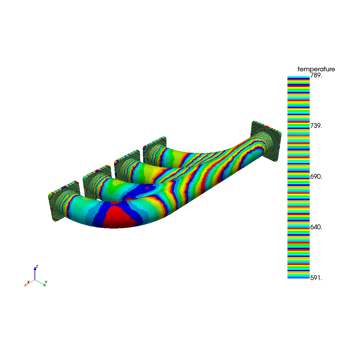
排气歧管的热结构分析
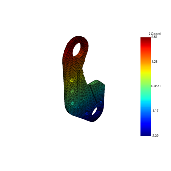
绘图和网格访问
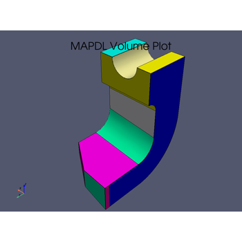
车床刀具结构分析
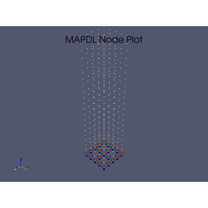
MAPDL 3D Beam
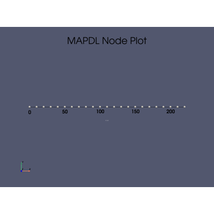
MAPDL 2D Beam
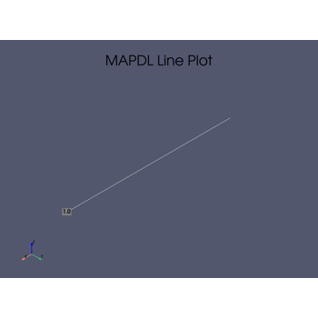
MAPDL 梁模态分析示例
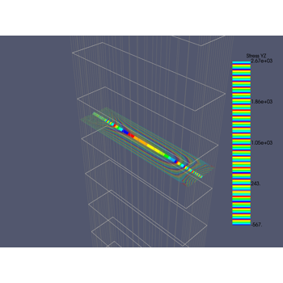
PyMAPDL 和 MAPDL 中的路径插值操作
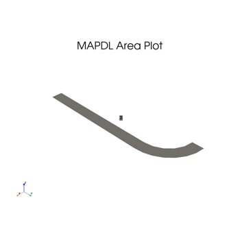
压力容器
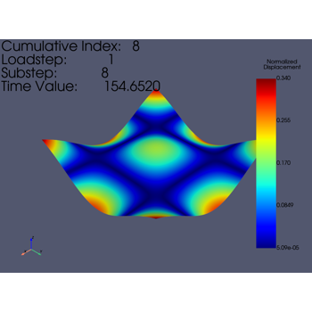
PyVista 网格集成
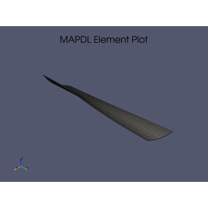
将 CFX 压力数据映射到结构叶片
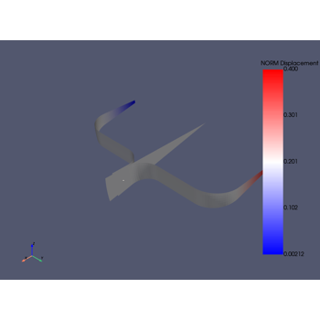
Running an input file - spotweld SHELL181 example
Running an input file - spotweld SHELL181 example
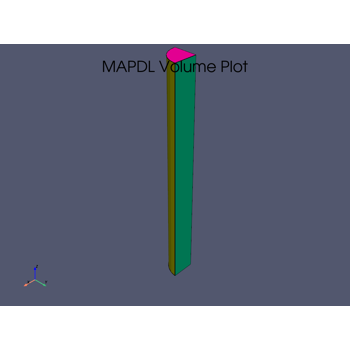
Torsional load on a bar using SURF154 elements
Torsional load on a bar using SURF154 elements